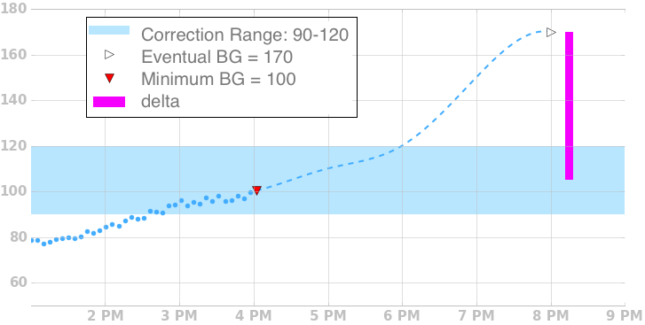
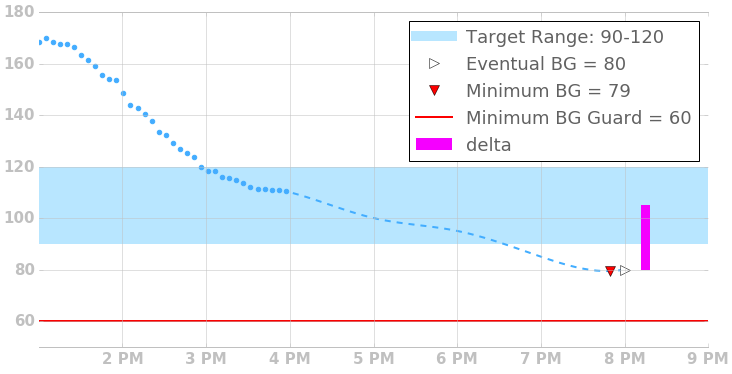
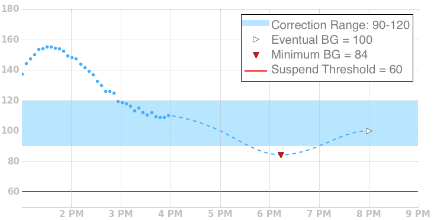

Temp Basal Adjustments⌁
If blood glucose is predicted to stray outside of the desired target range, Loop will adjust the basal rate temporarily in an attempt to keep actual blood glucose in range. To illustrate how it does this, we’ll go through a few examples.
Eventual BG Above Correction Range⌁

When eventual BG is predicted to go above the current correction range, Loop will calculate a delta from eventual bg to the midpoint of the correction range. Using the currently scheduled insulin sensitivity factor, loop calculates a temporary basal rate above your currently scheduled basal rate that would deliver, over 30 minutes, enough insulin to bring glucose levels back into range, capped at the max basal rate.
Eventual BG Below Correction Range⌁

When eventual BG is predicted to go below the current correction range, Loop will calculate a delta from eventual bg to the midpoint of the correction range. Using the currently scheduled insulin sensitivity factor, loop calculates a temporary basal rate below your currently scheduled basal rate that would reduce insulin delivery, over 30 minutes, enough to bring glucose levels back into range. It will reduce delivery to zero if needed.
Temporary Excursion Below Range⌁

If the prediction has a temporary excursion below range, but Eventual BG is in range, Loop will revert to using your normal basal schedule, as long as Minimum BG is above the suspend threshold.
Minimum BG Below Suspend Threshold⌁

If Minimum BG drops below Suspend Threshold, Loop will zero temp your pump regardless of where Eventual BG is.